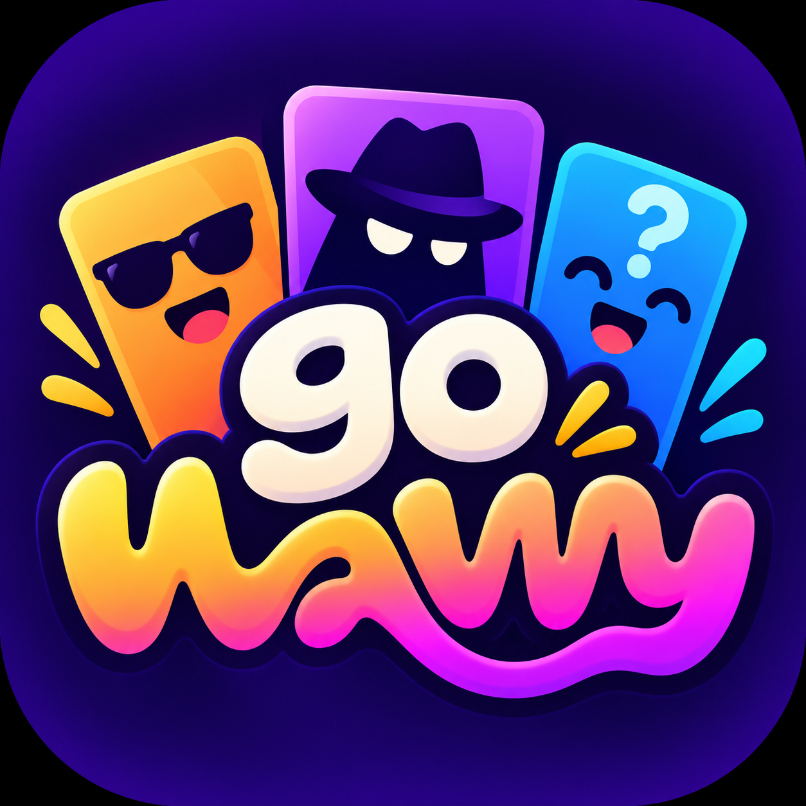

Escolha um jogo
Palpites, caos, cores ou um bom blefe. Tem uma vibe para cada grupo.

go wavvy✦PRIMEIRA ONDA 01Transforme qualquer encontro em uma boa história.
Quatro jogos para desafiar, rir e repetir.
Nenhum jogo encontrado. Experimente outra busca.
Palpites, caos, cores ou um bom blefe. Tem uma vibe para cada grupo.
Crie uma sala no jogo e compartilhe o código. Cada um entra pelo celular.
Todo mundo na sala? Comece a partida e descubra quem leva a melhor.